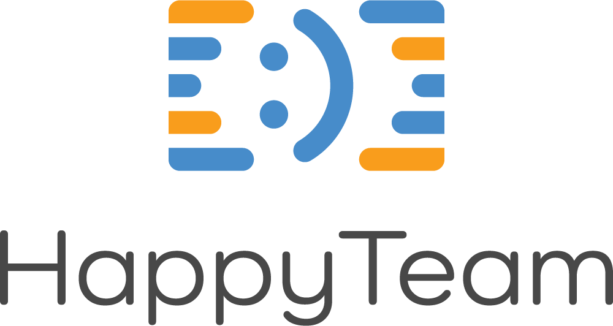

GoLang
Dla początkujących
Marcin Biegała
Lekcja 1
Nigdy nie planuj, że zrobisz coś w długi/świąteczny weekend.
Od razu jesteś skazany na porażkę :)
Co porabiam ?
|

www.happyteam.io
|
www.skillstemple.com
|
Gdzie można mnie znaleźć ?
- marcin@biegala.net
- @Biegal
- http://blog.biegala.net
- https://github.com/Biegal/spk-golang-intro
Ekspert
Ekspert to taki człowiek, który popełnił wszystkie możliwe błędy w bardzo wąskiej dziedzinie.
Niels Bohr
A jak trafiłem na GO ?
Najpierw był C#
- Thread, ThreadPool, Task, async/await ?
- Asp .vnext, core, 5 ?
- WebRequest, WebClient, HttpClient
A jak trafiłem na GO ?
Potem padło na JavaScript
Spuśćmy na to zasłonę milczenia
GO | GoLang
- Powstał w Google
- 2007/2009 - ver 1.0 w 2012
- Robert Griesemer, Rob Pike, Ken Thompson
Charakterystyka
- Open source
- Kompilowany, C-pochodny
- Statycznie typowany
- Garbage Collection
- Nie obiektowy, choć pozwala tak pisać
- Linux, Unix, OSX, FreeBSD, Windows, Android, iOS
Ale po co ?
- Google i problem wielu platform/języków
- Static vs dynamic typing
- Zaprojektowany z myślą o nowoczesnych procesorach
- Łatwiejszy od C++
- Ale równie szybki
- Bo programowanie to sport zespołowy
Kto uzywa ?
- Docker
- Dropbox
- BBC
- MongoDB
- Uber
- ...
Co składa się na GO ?
- Specyfikacja języka
- Kompilator
- Narzędzia
- Ekosystem
Zalety ?
- Całkiem prosta, skondensowana składnia
- Silne typowanie
- Czytelne komunikaty kompilatora
- Szybka kompilacja
- Wsparcie języka w operacjach równoległych
Wady ?
- Brak generyków
- Jeszcze ciut brakuje do C++ jeśli chodzi o wydajność
- Nietypowe podejścia (brak dziedziczenia, interfejsy)
Plusy względem Rust
- Łatwiejszy język
- Większa społeczność
- Sam zarządza pamięcią
- Stabilniejszy rozwój
Minusy względem Rust
- Wolniejszy
- Sam zarządza pamięcią
- Ciut mniejszy zakres funkcjonalności
- Bardziej 'nietypowy'